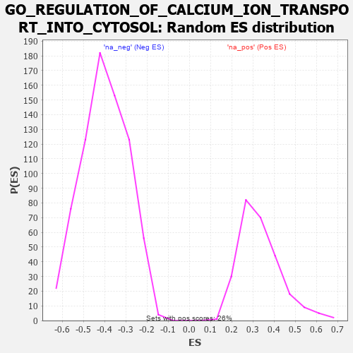

| | | Dataset | 7d |
| Phenotype | NoPhenotypeAvailable |
| Upregulated in class | na_neg |
| GeneSet | GO_REGULATION_OF_CALCIUM_ION_TRANSPORT_INTO_CYTOSOL |
| Enrichment Score (ES) | -0.7159047 |
| Normalized Enrichment Score (NES) | -1.7872156 |
| Nominal p-value | 0.0 |
| FDR q-value | 0.017598502 |
| FWER p-Value | 0.508 |
Table: GSEA Results Summary
 Fig 1: Enrichment plot: GO_REGULATION_OF_CALCIUM_ION_TRANSPORT_INTO_CYTOSOL
Fig 1: Enrichment plot: GO_REGULATION_OF_CALCIUM_ION_TRANSPORT_INTO_CYTOSOL
Profile of the Running ES Score & Positions of GeneSet Members on the Rank Ordered List
| PROBE | GENE SYMBOL | GENE_TITLE | RANK IN GENE LIST | RANK METRIC SCORE | RUNNING ES | CORE ENRICHMENT | | 1 | BAX | | | 387 | 0.711 | -0.0105 | No |
| 2 | JPH1 | | | 1741 | 0.347 | -0.1620 | No |
| 3 | ATG5 | | | 4051 | -0.016 | -0.4515 | No |
| 4 | ABL1 | | | 4125 | -0.027 | -0.4592 | No |
| 5 | JPH3 | | | 4481 | -0.091 | -0.4990 | No |
| 6 | PLCG1 | | | 4770 | -0.151 | -0.5271 | No |
| 7 | MYO5A | | | 4787 | -0.155 | -0.5207 | No |
| 8 | P2RX4 | | | 4813 | -0.161 | -0.5152 | No |
| 9 | PDPK1 | | | 5043 | -0.207 | -0.5329 | No |
| 10 | GRIN1 | | | 5381 | -0.291 | -0.5596 | No |
| 11 | CALCR | | | 5730 | -0.386 | -0.5826 | No |
| 12 | TRPC3 | | | 6035 | -0.483 | -0.5949 | No |
| 13 | P2RX5 | | | 6576 | -0.699 | -0.6252 | No |
| 14 | ANK2 | | | 7298 | -1.170 | -0.6530 | Yes |
| 15 | CALM1 | | | 7567 | -1.499 | -0.6061 | Yes |
| 16 | PDE4D | | | 7764 | -1.944 | -0.5262 | Yes |
| 17 | PKD2 | | | 7822 | -2.167 | -0.4168 | Yes |
| 18 | CALM3 | | | 7869 | -2.525 | -0.2868 | Yes |
| 19 | FYN | | | 7881 | -2.622 | -0.1473 | Yes |
| 20 | NPSR1 | | | 7913 | -2.947 | 0.0073 | Yes |
Table: GSEA details [plain text format]

Fig 2: GO_REGULATION_OF_CALCIUM_ION_TRANSPORT_INTO_CYTOSOL: Random ES distribution
Gene set null distribution of ES for GO_REGULATION_OF_CALCIUM_ION_TRANSPORT_INTO_CYTOSOL